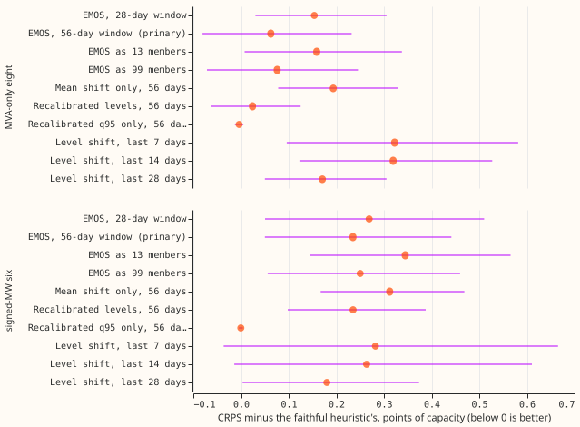
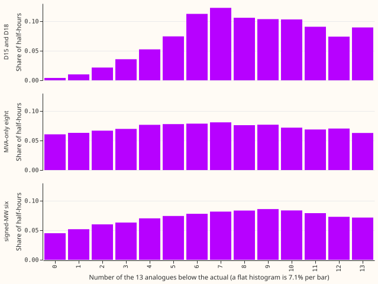
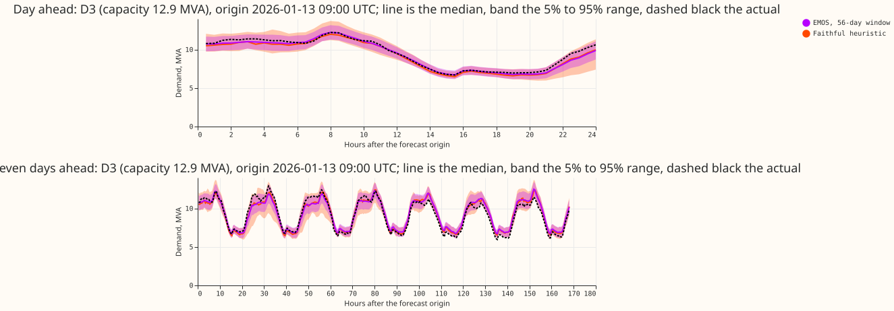

Which simple changes to NGED's manual heuristic lower its quantile score and its avoidable-curtailment cost?
National Grid Electricity Distribution (NGED) forecasts the demand at a substation with its manual heuristic: it reads one number, the 95th percentile of 13 equally weighted historical analogues (the demand at the same half-hour 1 to 6 weeks and 49 to 55 weeks earlier). We asked whether cheap changes to that rule lower its forecast error, without training a neural network. We tested a calibration fitted on the last 28 or 56 days of errors (ensemble model output statistics, EMOS, Gneiting et al. (2005)), a recalibration of the quantile levels, and a shift by the recent error, and scored each beside the unchanged ("faithful") heuristic on 5 months. The error score is CRPS, the continuous ranked probability score, in points of effective capacity; it equals twice the mean pinball loss over the 11 stored quantile levels. The two groups of substations are the eight Primaries whose meter records only apparent power (MVA-only) and the six whose meter records signed real power (signed-MW). None of the 10 variants lowered CRPS at either group by more than its interval.
Take-home: the faithful heuristic is hard to beat with a cheap fit, so it stays the benchmark. Rank histograms of the actual among the 13 analogues are close to flat on the whole record (stage 0, 2025-07 to 2026-06), and the 95th percentile is exceeded in 9.5% of half-hours at the eight and 10.6% at the six, at or below the 11.4% that perfectly calibrated analogues give with 13 members. The analogues are not calibrated everywhere: q01 and q99 are exceeded far more often than 1%, and the q95 coverage on cold winter nights is 0.59 at the eight and 0.66 at the six. The Gaussian fit corrects part of the cold-night shortfall, but over the five scored months it raises CRPS elsewhere. Verdict: not supported. What this narrows: these cheap fits did not close the gap to BG2; whether a regime-specific correction can is untested.
Figures



Results
- Rows. Experiment 457's row set (
fold_a_daily_gap_v1), five months (2025-10, 2025-12, 2026-01, 2026-03, 2026-06), 709,353 shared half-hours: 385,855 at the eight, 258,993 at the six, and 64,505 at the report-only Primaries D15 and D18, whose tables are inwork/scores/and not discussed here. The row set ends at 168 hours, so leads of 168 to 240 hours are not scored (stage 0 covers them). - Faithful heuristic, absolute scores (CRPS, points of capacity). Eight: 4.163; six: 3.760. References on the same rows: BG2 3.563 and 2.856, arm A-avg5 3.363 and 2.734, monthly XGBoost 3.655 and 3.051, climatology 4.564 and 4.091.
- Primary variant, EMOS (56-day window, weekly refit). CRPS difference from the faithful heuristic +0.063 at the eight (Bonferroni interval -0.081 to +0.232) and +0.235 at the six (+0.050 to +0.442). It does not clear the pre-registered rule.
- Every gating contrast (10 variants, 2 groups, 20 tests; CRPS, all rows):
- No variant lowers CRPS at both groups by more than its Bonferroni interval.
- The recalibrated q95 alone (
Tau95_56) is neutral: -0.004 at the eight and -0.0004 at the six, because the recalibrated level is the maximum member in 1,696 of 3,154 fits. - The remaining variants raise CRPS by 0.02 to 0.34 points.
- Cold winter nights (secondary, interval uncorrected for the wider family). EMOS lowers CRPS by 0.90 at the eight (-1.21 to -0.36) and 0.36 at the six (-0.58 to -0.03), and lowers the q99 pinball loss at both. At the eight, the recalibrated levels, the mean shift, and the 99-member EMOS also have cold-night intervals below zero.
- Where EMOS loses. At the six, CRPS rises by 2.28 points in Christmas week, the q01 pinball loss rises by 0.148, and the median forecast's mean absolute error is 7.04 against 6.69 points. At the eight, EMOS lowers Christmas-week CRPS by 0.19 (-0.33 to -0.05).
- Tail coverage, eight and six (EMOS against faithful). q95 0.891 and 0.916 against 0.881 and 0.880; q99 0.946 and 0.966 against 0.912 and 0.911.
- Avoidable-curtailment cost, signed-MW six, millions of pounds over the five months (faithful heuristic against EMOS; difference with 95% interval over month-by-series cells). At f = 0.9: 2.02 against 1.71 (-0.31, -1.54 to +0.45). At f = 0.75: 12.88 against 10.92 (-1.97, -7.07 to +1.24). At f = 0.5: 37.79 against 33.68 (-4.11, -13.21 to +1.95). BG2 gives 1.37, 8.24, and 25.92. No interval excludes zero.
- Emitting a distribution as members. Emitting the Gaussian as 13 equiprobable members raises CRPS by 0.10 to 0.11 over the exact Gaussian; 99 members raise it by 0.013 to 0.015.
Checks
- Median minus mean forecast, per Primary. The analogue median sits 0.0005 to 0.06 MW from the
analogue mean (
work/scores/checks.csv); no spread-driven shift. - Error of the median forecast beside the CRPS contrasts. Median mean absolute error, eight and six: faithful 7.27 and 6.69 points; EMOS 7.40 and 7.04. The median and the CRPS point the same way.
- Triggers fired. None of the seven audit triggers. The prediction that the q95 exceedance moves from 11% to 14% towards 5% (P2) failed, because stage 0 measured 9.5% and 10.6% before any fit. On the scored months the faithful q95 coverage is 0.881 at the eight and 0.880 at the six, an exceedance of about 12%, so the 11.4% comparison holds on stage 0's twelve months and not on the scored five.
- Reviews. A fresh Sonnet agent reviewed the code before the first scored run. The reviewer found
no lookahead or alignment bug, and the findings were accepted: the Bonferroni count covers only the
gating cells, every variant is floored at zero at the eight MVA-only Primaries, rows with fewer than
6 members take the faithful quantiles, and the check against experiment 87 asserts. The reviewer
also noted
that the probability-integral-transform recalibration cannot extend the tails beyond the member
range, which explains
Tau95_56.
Method
- Stage 0. Rebuilt from the stored members (
data/power_forecasts/experiment_name=manual_heuristic), the 11 quantiles equal experiment 87's stored reference to 4e-15 MW. Rows hold 13 or 12 members at 92% of half-hours; the rest hold 3 to 11 because observed power is missing. The Spearman correlation of analogue spread with the absolute error of the analogue mean is 0.43 to 0.57, so the spread carries information, yet the EMOS spread term did not lower CRPS over the five months. - Stage 1 and the level adjustment. Variants
E28,E56,E56m13,E56m99,MeanLS56,Q56,Tau95_56,Lvl7,Lvl14,Lvl28. Fits are per Primary and lead band (0 to 24, 24 to 72, 72 to 120, 120 to 168 hours), weekly refits, pairs whose valid time is at least 24 hours before the refit. A 112-day window (E112) was written and not scored, because the member store starts in mid-June 2025 and 2025-10 lacks the history. - Not run. The pre-registered stop rule applied. Holiday-aligned analogues, the clock-change arm, 7 and 26 analogues, and the load-growth arm, because no stage 1 variant beat the faithful heuristic. Per-Primary results, Economy 7 and sunny slices, and the largest-event-removed sensitivity were not produced. The D15 and D18 tables exist and are not discussed.
- Selection bias. Windows were chosen and scored on the same five months, so every variant's result is, if anything, optimistic.
- Cadence and cleaning. Weekly refits of the calibration, not of a model. Actuals are the cleaned scoring actuals (1,179 flagged exact-zero half-hours removed). The cut of D15 and D18 before 2025-03-01 is moot for the five scored months.
- Code.
ml-experiments/00471-manual-heuristic-calibration-and-analogue-upgrades/, importing the folders of experiments 448, 452, 457, 449, and 425. - Predictions.
data/ml-experiments/00471-manual-heuristic-calibration-and-analogue-upgrades/work/predictions/<variant>.parquet.
What to try next
A correction fitted only on cold winter nights, since that is where EMOS gained, and a scoring row set that reaches 240 hours.